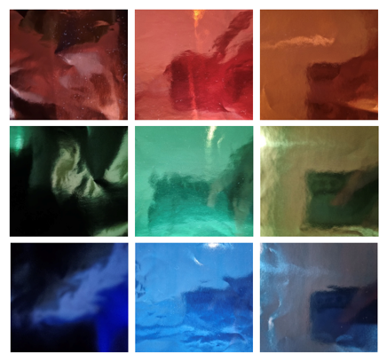
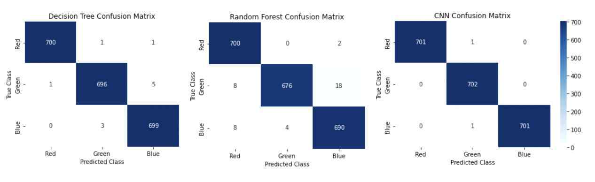
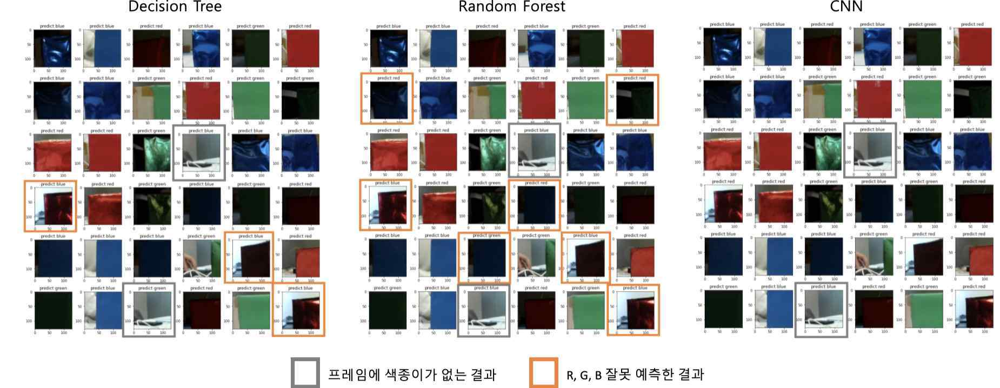

COMPUTER VISION, DATA QUALITY, MACHINE LEARNING
오렌지파이 기반 RGB 색상 분류 모델 개발
같은 RGB 색상도 조명, 촬영 각도와 표면 특성에 따라 카메라에 다르게 기록되는 문제를 다뤘습니다. 촬영 조건을 나눠 21,054장의 데이터셋을 구성하고 Decision Tree, Random Forest, CNN의 성능과 입력 표현 차이를 비교했습니다.
- 기간
- 2022.09–2023.01
- 소속
- 중앙대학교 다빈치 창의학점제
- 역할
- 팀장, 데이터 수집 기준 정립, 데이터셋 구축, 모델 비교
- 성과
- 한국지식재산교육연구학회 논문지 게재, 공동저자 2/7

촬영 조건과 데이터 품질
같은 색상, 달라지는 카메라 입력
조명, 각도와 표면 조건을 나눠 데이터를 수집하고, 세 모델을 같은 시험 데이터에서 비교했습니다.
01 / DATA DESIGN
색상 변화를 반영한 수집 기준
오렌지파이와 카메라를 사용해 색상, 박스 각도, 주변 밝기와 표면 특성을 나눈 촬영 조건별 데이터 수집 기준을 정리했습니다.
02 / DATASET
21,054장 데이터셋 구축
3024×3024 원본 이미지를 256×256 단위로 분할해 각 색상 7,018장, 총 21,054장을 구성했습니다. 학습과 시험 데이터는 약 9:1로 분리했으며, 실제 모델 입력에서는 중앙 영역을 128×128×3으로 사용했습니다.
03 / MODEL COMPARISON
동일 시험 데이터 기반 모델 비교
동일한 시험 이미지를 사용하되, Decision Tree와 Random Forest는 RGB 채널 평균값 3개를, CNN은 128×128×3 전체 이미지를 입력으로 사용했습니다.

| 모델 | 정확도 | ROC-AUC |
|---|---|---|
| Decision Tree | 99.48% | 0.9961 |
| Random Forest | 98.10% | 0.9858 |
| CNN | 99.91% | 0.9993 |
04 / FINDING
동일 입력에서 나타난 공동 오분류

128×128 이미지의 공간 구조를 사용하지 않고 각 채널 평균값만 입력으로 사용했습니다.
이미지의 공간 정보와 색상 분포를 함께 사용했습니다.
Decision Tree와 Random Forest가 같은 사진에서 함께 오분류하는 사례를 확인했습니다. 두 모델이 동일하게 RGB 채널 평균값만 입력으로 사용한다는 점에서, 입력 표현이 공간 정보를 잃은 것이 원인 중 하나일 가능성이 있다고 분석했습니다.
05 / LIMITATION
입력 유효성 판단의 한계
세 모델은 색종이가 충분히 포착되지 않은 이미지에서도 반드시 R, G, B 중 하나를 출력했습니다. 높은 분류 정확도와 별개로, 실제 시스템에는 입력 유효성을 판단하는 단계가 필요하다는 한계가 남았습니다.
다시 구현한다면 Unknown 또는 Reject 클래스를 추가하고, 신뢰도가 낮은 입력은 분류를 보류하도록 설계하겠습니다.
06 / ROLE
담당 범위
- 데이터 설계데이터 수집 조건 정리
- 데이터셋전처리와 데이터셋 구축
- 모델 비교세 모델 학습과 성능, 입력 표현 비교
- 연구 결과물논문 공동저자 2/7
07 / OUTPUT